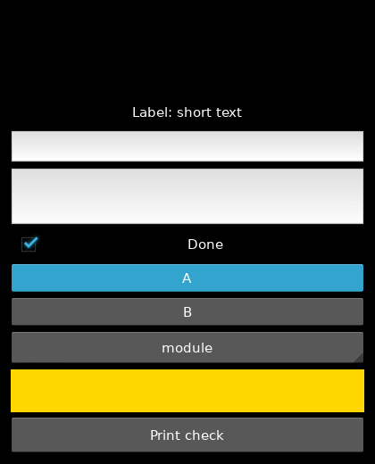
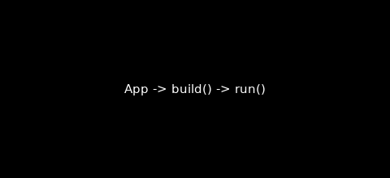
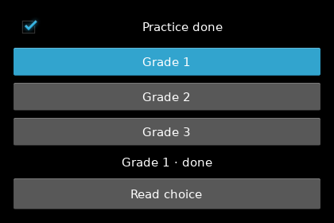
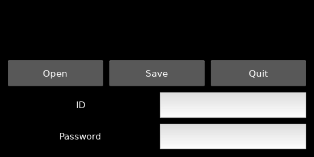
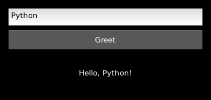
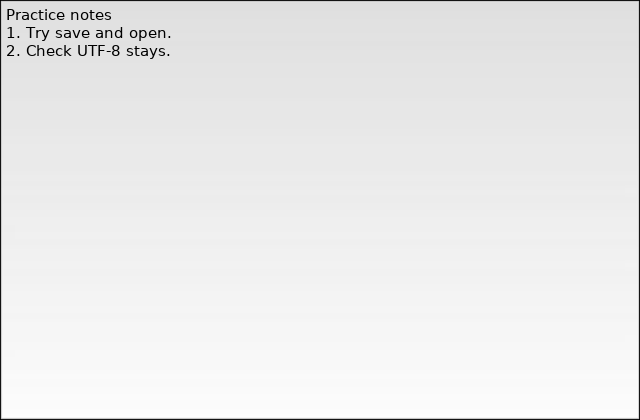
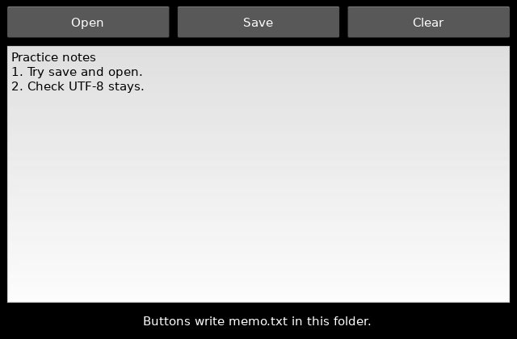
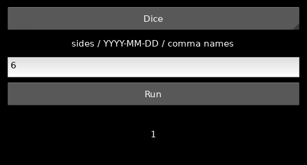

App 클래스 → build() → run()본편 Tk·pack·command·mainloop를 Kivy 이름으로 옮긴 순서입니다. 브라우저에서는 창이 뜨지 않습니다.
 인공지능 파이썬 실무
인공지능 파이썬 실무Ⅱ. GUI 프로그래밍 · 주제 11 / 11
본편에서 익힌 창·위젯·배치·이벤트·메모장을 자체 렌더링 터치 UI로 옮깁니다.
대단원 Ⅱ. GUI 프로그래밍 교과서 40–59쪽
추가 실습 · 교과서 밖 확장
이 웹 주제의 연계 범위: 부록 · 확장 학습
웹 학습 주제 11 / 11
본편에서 익힌 창·위젯·배치·이벤트·메모장을 자체 렌더링 터치 UI로 옮깁니다.
| 역할 | tkinter | Kivy |
|---|---|---|
| 앱·창 | Tk() | App + build() |
| 설명 글 | Label | Label |
| 한 줄 입력 | Entry | TextInput(multiline=False) |
| 여러 줄 | Text | TextInput(multiline=True) |
| 버튼 클릭 | command= | bind(on_press=) |
| 배치 | pack / grid | BoxLayout / GridLayout |
| 이벤트 루프 | mainloop() | App.run() |
BEFORE THE CODE
새 이름·속성이 코드에 나오기 전에 짧게 봅니다. 외우기보다 역할을 먼저 구별하세요.
App 클래스 → build() → run()본편 Tk·pack·command·mainloop를 Kivy 이름으로 옮긴 순서입니다. 브라우저에서는 창이 뜨지 않습니다.
본편을 다시 배우는 길이 아닙니다. 같은 앱을 네 번째 툴킷으로 대조하는 확장입니다.
사이트 안의 Python입니다. C 확장인 Kivy를 불러올 수 없어 PC 실습으로 표시합니다.
HISTORY / VIDEO
Kivy는 2011년 공개된 파이썬 UI 프레임워크입니다. 운영체제 위젯 대신 직접 그려, 터치와 여러 화면 크기를 같은 코드로 노립니다.
Kivy Course — Create Python Games and Mobile Apps (freeCodeCamp) ↗
영어 공개 강의입니다. 앞부분의 Label·Button·레이아웃만 보고, 게임 프로젝트는 건너뛰어도 됩니다. 학교 네트워크·연령 정책을 확인하세요.
RESULT PREVIEW

이 페이지는 본편 tkinter/PySide6 경로와 wxPython 부록을 대체하지 않습니다. 같은 인사·위젯 도감·배치·이벤트·메모 형태·생활 도우미를 Kivy로 다시 구성합니다. 수행평가의 기본 도구는 여전히 tkinter입니다.
브라우저의 Pyodide에는 Kivy가 포함되지 않습니다. C 확장과 창 시스템을 불러올 수 없어 웹 실습실은 창을 열지 않습니다. 문법을 확인하고, 아래 코드와 실행 화면으로 역할을 배웁니다. 실제 창·버튼·파일 저장은 PC에서 확인하세요. 가상환경을 켠 뒤 python -m pip install kivy 를 실행하고 python main.py로 엽니다. Windows PowerShell은 .venv\Scripts\Activate.ps1, macOS/Linux는 source .venv/bin/activate입니다.
실행 순서는 App 클래스 → build()가 위젯을 반환 → run()입니다. tkinter의 Tk·pack·command·mainloop, Qt의 QApplication·Layout·connect·exec, wx의 App·Sizer·Bind·MainLoop를 역할로 옮기세요. 단어만 바꾸면 bind 인자의 위젯 매개변수에서 막힙니다.
위젯 이름은 Label→Label, Entry→TextInput(multiline=False), Text→TextInput(multiline=True), Checkbutton→CheckBox, Radiobutton→ToggleButton(같은 group), Listbox→Spinner, Button→Button입니다. 체크 상태는 BooleanVar가 아니라 active로 읽습니다.
배치는 BoxLayout(orientation="vertical"/"horizontal")과 GridLayout(cols=...)입니다. size_hint는 부모 공간의 비율이고, None이면 height 픽셀을 씁니다. 이벤트는 button.bind(on_press=self.greet)처럼 함수 자체를 맡깁니다. greet()를 넘기면 창을 만들 때 이미 실행됩니다.
메모는 OS 메뉴·파일 대화 상자 대신 Open/Save 버튼과 memo.txt로 같은 열기·저장·없는 파일 분기를 만듭니다. FileChooser를 붙이면 경로를 고를 수 있습니다. 생활 도우미는 같은 core.logic을 Spinner에 연결합니다. 빈 입력·0면 주사위·잘못된 날짜를 시험하세요. 기본 글꼴은 한글을 가정하지 않으므로 캡처는 영어 문구입니다.
예제를 선택하면 바로 아래에서 코드를 수정하고 실행할 수 있습니다. 작성한 코드는 예제별로 저장됩니다.
BEFORE THE CODE
새 이름·속성이 코드에 나오기 전에 짧게 봅니다. 외우기보다 역할을 먼저 구별하세요.
class FirstApp(App):
def build(self):
return Label(...)앱 클래스입니다. build()가 첫 화면 위젯을 반환합니다. tkinter의 Tk()가 창과 앱을 겸하는 것과 다릅니다.
Window.size = (480, 220)처음 창 크기입니다. tkinter geometry, wx Frame size에 대응합니다. App보다 먼저 지정할 수 있습니다.
FirstApp().run()이벤트 루프를 시작합니다. tkinter mainloop, Qt exec, wx MainLoop에 대응합니다.
운영체제 버튼이 아니라 Kivy가 직접 그립니다. 터치·여러 플랫폼 UI에 맞습니다.
Pyodide에는 Kivy가 없습니다. 이 페이지는 코드와 캡처로 가르치고, 실제 창은 PC에서 엽니다.
HISTORY / VIDEO
Kivy 앱은 App 클래스의 build()가 첫 위젯 트리를 돌려 줍니다. 2011년 공개 이후 터치·여러 화면 크기를 같은 코드로 다루는 쪽이 목표가 되었습니다.
RESULT PREVIEW

BEFORE THE CODE
새 이름·속성이 코드에 나오기 전에 짧게 봅니다. 외우기보다 역할을 먼저 구별하세요.
class GreetingApp(App):
def build(self):
return box앱 클래스입니다. build()가 첫 화면을 반환합니다. 창보다 앱이 먼저입니다.
box = BoxLayout(orientation="vertical", padding=16, spacing=8)위에서 아래로 붙입니다. pack() 대신 Layout이 자리를 정합니다.
self.entry = TextInput(multiline=False)
self.entry.text · self.entry.text = ""한 줄 입력입니다. tkinter Entry의 get/delete에 대응합니다.
button.bind(on_press=self.greet)누르는 사건에 함수를 맡깁니다. bind(..., self.greet())처럼 괄호를 붙이면 지금 실행됩니다. greet는 버튼 인자를 받습니다.
GreetingApp().run()이벤트 루프입니다. tkinter mainloop / Qt exec / wx MainLoop에 대응합니다.
자체 렌더링 GUI 도구입니다. 운영체제 위젯이 아니라 터치·여러 플랫폼 화면에 맞습니다.
처리 함수의 첫 매개변수입니다. 쓰지 않아도 선언해야 TypeError가 나지 않습니다.
HISTORY / VIDEO
Kivy는 2011년 공개된 오픈 소스 UI 프레임워크입니다. 운영체제 버튼을 빌리지 않고 직접 그리므로, 기본 글꼴의 한글은 별도 지정해야 할 수 있습니다.
Kivy Course — Create Python Games and Mobile Apps (freeCodeCamp) ↗
영어 공개 강의입니다. 앞부분의 Label·Button·레이아웃만 보고, 게임 프로젝트는 건너뛰어도 됩니다. 학교 네트워크·연령 정책을 확인하세요.
RESULT PREVIEW

BEFORE THE CODE
새 이름·속성이 코드에 나오기 전에 짧게 봅니다. 외우기보다 역할을 먼저 구별하세요.
Label(text="설명", font_name=font)짧은 글을 보여 줍니다. tkinter Label, wx StaticText에 대응합니다. 나중에 .text로 바꿉니다.
entry = TextInput(multiline=False)
entry.text한 줄 입력의 현재 문자열입니다. Entry.get() / TextCtrl.GetValue()와 같습니다.
button.bind(on_press=self.show_name)버튼을 누르는 순간에 함수를 부릅니다. command= / Bind(EVT_BUTTON)에 대응합니다. show_name()처럼 괄호를 붙이면 지금 실행됩니다.
이름·아이디처럼 줄바꿈이 없는 값입니다. 여러 줄 메모는 multiline=True를 씁니다.
RESULT PREVIEW

BEFORE THE CODE
새 이름·속성이 코드에 나오기 전에 짧게 봅니다. 외우기보다 역할을 먼저 구별하세요.
done = CheckBox(active=False)
done.active서로 독립적으로 켜고 끌 수 있습니다. True 또는 False입니다. BooleanVar가 따로 없습니다.
ToggleButton(text="Grade 1", group="grade")같은 group 문자열을 주면 하나만 내려간 상태(state="down")가 됩니다. RadioButton / RB_GROUP에 대응합니다.
tkinter는 BooleanVar에 상태를 둡니다. Kivy는 위젯 속성(active, state)에서 읽습니다.
RESULT PREVIEW

BEFORE THE CODE
새 이름·속성이 코드에 나오기 전에 짧게 봅니다. 외우기보다 역할을 먼저 구별하세요.
TextInput(multiline=True)여러 줄 입력입니다. 한 줄은 multiline=False입니다. tkinter Text, wx TE_MULTILINE에 대응합니다.
Spinner(text="module", values=["module", "package"])목록에서 고릅니다. Listbox / wx.ListBox / QComboBox를 드롭다운으로 대신합니다.
with self.canvas:
Color(1, 0.84, 0)
Rectangle(...)도형 Canvas와 일대일은 아닙니다. canvas에 색과 사각형을 올려 “그리기 자리”를 표시합니다.
Label→Label, Entry→TextInput, Text→multiline, Check→CheckBox, List→Spinner입니다. 역할로 외우세요.
RESULT PREVIEW
BEFORE THE CODE
새 이름·속성이 코드에 나오기 전에 짧게 봅니다. 외우기보다 역할을 먼저 구별하세요.
BoxLayout(orientation="vertical")
BoxLayout(orientation="horizontal")세로 묶음과 가로 묶음입니다. pack / QVBoxLayout·QHBoxLayout / BoxSizer에 대응합니다.
Button(..., size_hint_y=None, height=44)size_hint는 부모 공간의 비율입니다. None이면 height·width 픽셀을 씁니다. wx Add의 비율 숫자와 같은 생각입니다.
grid = GridLayout(cols=2, spacing=8)열 개수를 정한 격자입니다. tkinter grid, wx FlexGridSizer에 대응합니다.
TextInput(multiline=False, password=True)입력 글자를 가립니다. Entry의 show="*" / wx TE_PASSWORD와 같은 목적입니다.
위젯의 자리를 정하는 배치 관리자입니다. add_widget으로 자식만 올리면 됩니다. pack을 따로 호출하지 않습니다.
RESULT PREVIEW

BEFORE THE CODE
새 이름·속성이 코드에 나오기 전에 짧게 봅니다. 외우기보다 역할을 먼저 구별하세요.
button.bind(on_press=self.greet)사건에 함수를 맡깁니다. command= / clicked.connect / Bind에 대응합니다. greet()를 넘기면 창을 만들 때 이미 실행됩니다.
button.bind(on_press=self.greet)버튼을 누르는 순간입니다. 처리 함수는 위젯 인자 하나를 받습니다. 쓰지 않아도 매개변수는 있어야 합니다.
entry.bind(text=self.preview)
def preview(self, widget, value):한 글자가 바뀔 때마다 preview(widget, value)를 호출합니다. Qt textChanged, wx EVT_TEXT와 같습니다.
def greet(self, button):Kivy는 이벤트를 보낸 위젯을 넘깁니다. tkinter command는 인자가 없습니다. 함수 머리를 그대로 옮기면 TypeError가 납니다.
bind(text=...)처럼 속성 이름이 사건입니다. 값이 바뀔 때 함수가 호출됩니다.
bind(on_press=self.greet())는 창을 만들 때 이미 실행됩니다. 함수 이름만 넘기세요.
RESULT PREVIEW

BEFORE THE CODE
새 이름·속성이 코드에 나오기 전에 짧게 봅니다. 외우기보다 역할을 먼저 구별하세요.
Window.size = (640, 420)처음 창 크기입니다. tkinter geometry("640x420")에 대응합니다.
TextInput(multiline=True)여러 줄 편집기가 창을 채웁니다. build()가 이 위젯만 반환하면 레이아웃 없이 가득 찹니다.
창과 편집기만 있으면 메모장의 뼈대입니다. 열기·저장은 다음 예제입니다.
RESULT PREVIEW

BEFORE THE CODE
새 이름·속성이 코드에 나오기 전에 짧게 봅니다. 외우기보다 역할을 먼저 구별하세요.
Path("memo.txt").write_text(self.editor.text, encoding="utf-8")UTF-8로 읽고 씁니다. tk/wx 메모장과 같은 파일 내용입니다. 운영체제 파일 대화 상자는 쓰지 않습니다.
if not self.path.exists():
return열을 파일이 없으면 편집기를 비우지 않습니다. wx FileDialog에서 취소를 누른 것과 같은 분기입니다.
self.status.text = "Saved memo.txt"성공·실패를 창 안에 보여 줍니다. MessageBox / filedialog 대신 상태 줄을 씁니다.
Kivy는 OS 메뉴·파일 대화 상자가 기본이 아닙니다. FileChooser를 붙일 수 있지만, 먼저 고정 파일로 열기·저장 분기를 익힙니다.
파일이 없을 때 Open을 눌러 보세요. 기존 글이 그대로면 분기가 맞은 것입니다.
RESULT PREVIEW

BEFORE THE CODE
새 이름·속성이 코드에 나오기 전에 짧게 봅니다. 외우기보다 역할을 먼저 구별하세요.
from core.logic import roll, days_left, draw화면 파일은 계산을 직접 쓰지 않습니다. 웹의 core 예제·tk/PySide/wx 생활 도우미와 같은 함수입니다.
self.mode = Spinner(text="Dice", values=["Dice", "D-day", "Draw"])
self.mode.text드롭다운으로 모드를 고릅니다. tkinter 라디오, Qt QComboBox, wx Choice를 한 위젯으로 대신합니다.
Popup(title="Check input", content=Label(text=메시지), size_hint=(0.8, 0.4)).open()잘못된 입력을 창으로 알립니다. messagebox.showwarning / wx.MessageBox에 대응합니다.
core에는 Kivy가 없습니다. 같은 roll을 네 GUI에서 부를 수 있습니다.
RESULT PREVIEW

CODE WORKSPACE
실행 엔진은 처음 실행할 때 내려받습니다. 패키지 크기에 따라 최초 준비에 최대 3분이 걸릴 수 있으며 네트워크가 필요합니다. 실행은 최대 30초이며 중지 후 다시 실행할 수 있습니다.
실행할 예제를 선택하세요.
PRACTICE / RETRY / UNDERSTAND
이 주제와 연결된 문제만 보여 줍니다. 단원 전체 문제는 단원 안내 페이지에서 이어서 풀 수 있습니다.